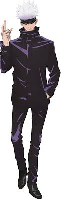
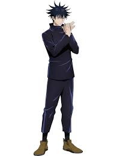
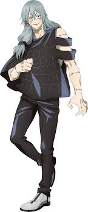

Yuji itadori, age: 15, rank: Grade 3 sorcerer. Techinice: Divergent fist/Black flash

Satoru gojo, age: 29, rank: special grade sorcerer. Techinice: Six six-eyes

Megumi fushiguro, age: 15, rank: grade 2 sorcerer. Techinice: Ten shadows

Kento nanami, age: 27, rank: grade one sorcerer. Techinice: Over time

Maki and mai zennin, age: 16, rank: grade 2 sorcerer. Techinice: Creation/none

Mahito Born from hatred and sorrow, not human. Age: a few months old, Rank: ???. Techinice: Idle transfiguration
Ryomen Sukuna, Age: over 10 millineas. rank: Strongest of history. Techinice: King of curses